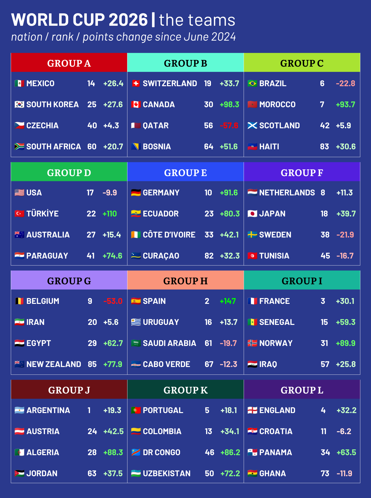
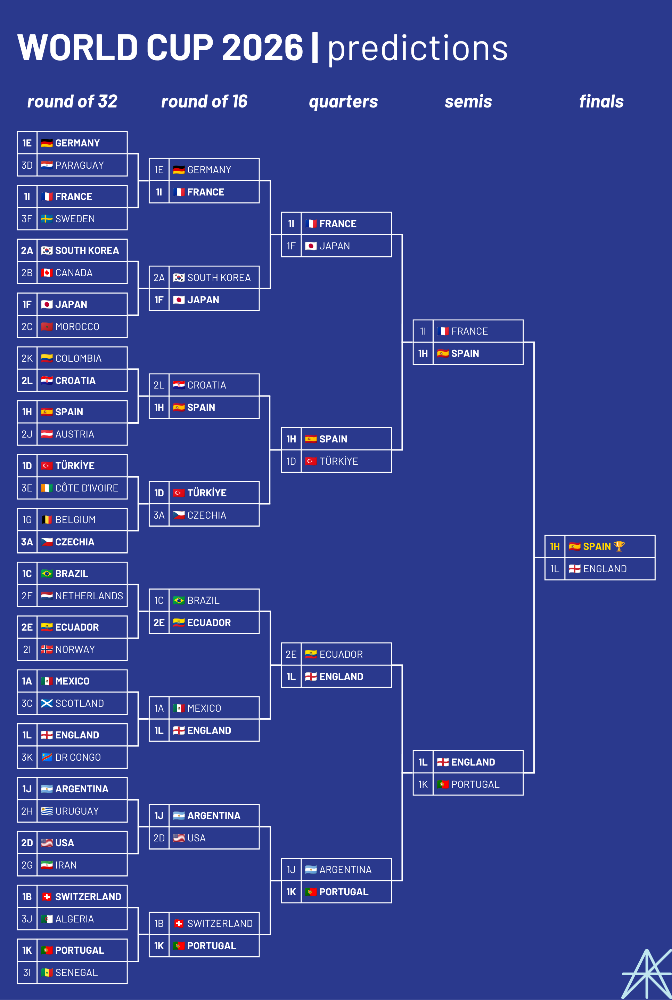

Tomorrow, all eyes will be on Mexico City’s famed Estadio Azteca as the world’s grandest sporting event kicks off for its 23rd edition. Mexico against South Africa, a rematch of the 2010 World Cup opener with that Siphiwe Tshabalala goal, will be the first of a record 104 matches across the North American continent as an unprecedented 47 teams vie for the biggest title in sports. Oh, and New Zealand will be there too.
There’s no way of knowing what will happen. After all, at the last World Cup in 2022, Argentina lost their opening match to Saudi Arabia only to finish as champions. Nobody expected Morocco to make the semifinals. Germany failed to get out of the group stage again. But in this article, I’m going to attempt to predict it all, from the group stage to the finals.
Two years ago, I went through this same exercise for Euro 2024, and correctly predicted that the final would be Spain over England. Today, I will be attempting to recreate the magic with a combination of stats, vibes, and ball knowledge. These are my picks for the 2026 World Cup. This is PVP Predictions.

PICKING THE LOSERS
The graphic you see above is a brief guide to the 48 teams and their performance over the past two years, from before Euro 2024 began to the time of publication. Argentina, winners of the last World Cup, are ranked the best team in the world by FIFA. But tournaments are often driven by momentum, and Argentina are middling by that measure: other nations, like Spain and Türkiye, have been on a hot streak, while countries like Brazil and the United States are actually worse off than they were in June 2024. This graphic will be our main tool to predict winners and losers.
It’s the first World Cup to feature 48 teams, so it’s the first World Cup to feature a round of 32. The flipside of that is that only 16 teams will go home after the group stage. Or actually, since the tournament is kicking off in Mexico, let’s say they’re going to Cancún, NBA-style.
This means that eight of the twelve groups will see only one of their four teams be eliminated after their first three matches. As a result, the group stage is a bit less meaningful than in previous editions, much like the NBA regular season. Most group winners’ round of 32 opponents will, strangely, be decided by which groups have the worst third-placers and as a result send just two teams to the round of 32. Therefore, we must begin by picking the losers.
You have to go back to the 24-team 1994 World Cup, also hosted by the United States, to find the last time third-place teams qualified from the group stage at a World Cup. But continental tournaments such as the Euros, the Africa Cup of Nations, and the Asian Cup currently feature 24 teams, 16 of which make it out of the group stage. Across recent editions of these tournaments, a pattern emerges: if you end the group stage with 2 points (i.e. two draws and a loss), you’re almost certain to go home. If you end the group stage with 3 points but a large negative goal differential (i.e. one win but two big losses), it’s not looking too good for you either.
So the task is to find four groups where two teams are going to fall below this threshold. The primary recipe for such a group is simple: two good teams, and two bad teams for those good teams to beat. Two clear candidates emerge: Group H and Group L. In Group H, Spain and Uruguay are far better than Saudi Arabia or Cabo Verde, something made very clear by the fact that the former two nations are both in the top 20 of FIFA’s rankings and the latter two are ranked below 60th. Similarly, in Group L, England and Croatia are pitted against much weaker Panama and Ghana, who might not get any more than 2 points each. On paper, Group C and Group K exhibit this same competitive imbalance, but Scotland in Group C are better than their rating suggests, and given the rapid ascendancy of the Congolese and the Uzbeks (as shown in the points change column) in Group K, I’m tempted to give one of them a shot at qualifying for the round of 32.
So let’s consider another recipe for a two-team elimination: one competent team accompanied by three mediocre-to-bad ones that could draw their way to an early trip to Cancún. I see this being the case in Group B, where Canada, Qatar, and Bosnia and Herzegovina are all ranked 30th or below, and Group G, where Iran and Egypt are probably over-ranked, and New Zealand are basically an afterthought.
With that out of the way, we’ve narrowed things down to just one of the 495 possible combinations for the round of 32 matchups. Here’s the bracket permutation:
- The first-placed team in Group A will play the third-placed team in Group C;
- The first-placed team in Group B will play the third-placed team in Group J;
- The first-placed team in Group D will play the third-placed team in Group E;
- The first-placed team in Group E will play the third-placed team in Group D;
- The first-placed team in Group G will play the third-placed team in Group A;
- The first-placed team in Group I will play the third-placed team in Group F;
- The first-placed team in Group K will play the third-placed team in Group I;
- And the first-placed team in Group L will play the third-placed team in Group K.
Alright, on to the group stage!
THE GROUP STAGE
GROUP A
We begin at the Azteca on June 11. It’s a match scheduled to give the home team the best chance of an early win, as FIFA’s rankings have Mexico as the best team in this group and South Africa the worst. And in this format, just getting to 3 points gives you a very good chance of going through to the round of 32.
The early 2020s were rough for El Tri, with plenty of tournament losses to their American rivals. But a return to form may be brewing in manager Javier Aguirre’s third term at the helm: in 2025, Mexico won CONCACAF’s Gold Cup and Nations League.
Incidentally, it was also Aguirre who led Mexico to a 1-1 draw against South Africa in their 2010 opener. But I think South Africa will struggle here: they qualified from their group in the African confederation—their first qualification since 2010—thanks in part to an underperforming Nigeria team, and were recently seen playing to a goalless draw with Nicaragua. Not exactly inspiring stuff.
The most interesting part of the World Cup group stage is usually what plays out between the second- and third-best teams in the group, and that’s no less true here. South Korea could even make a play for group winner—on their American visit last September, they beat the U.S. 2-0 and drew 2-2 with Mexico—but I think the home atmosphere will buoy Mexico here. Having made every World Cup since 1986, though, South Korea will be looking for more in the round of 32.
Rounding out the group, Czechia are making their first World Cup appearance since 2006, when they were inexplicably ranked 2nd in the world behind Brazil but exited after the group stage. The Czechs got here the long way round: finishing second in their qualifying group behind Croatia, then beating both Ireland and Denmark on penalties. In fact, Czechia have never lost a penalty shootout in a major international tournament. I think they can beat South Africa and grab another point against either Mexico or South Korea to qualify for the round of 32, giving them another chance to go through on penalties.
Prediction: Mexico, South Korea, Czechia, South Africa
GROUP B
On paper, this is maybe the worst World Cup group of all time. Not only are Switzerland the lowest-ranked team to be the frontrunner in their group, Canada are also the lowest-ranked team to be second in their group. And by chess-style Elo ratings, Qatar are the worst team in the history of the World Cup. Bosnia and Herzegovina aren’t exactly world-beaters either.
Despite Canada holding home field for their final match, this group should be an easy win for Switzerland. The Swiss are heading into this tournament on a really good run of form, scoring four goals in wins over fellow World Cup participants in Mexico, the United States, Sweden, and Jordan just in the past year. They’re a candidate to go far, if they can avoid other top teams.
Qatar are at the other end of the scale, with losses to Lebanon, Russia, Zimbabwe, and Ireland. By FIFA ranking points differential over the past two years, they’re dead last out of all the teams at the tournament (-57.6). I think Qatar will be easy fodder for the other teams in this group, potentially even Bosnia and Herzegovina. The Bosnians famously qualified for this tournament after beating both Wales and Italy on penalties, and even at 40, Edin Džeko can still get goals. But it probably won’t be enough to qualify.
What a wild past few years it’s been for Canada, from being a soccer afterthought for decades, to finally qualifying in 2022, to hosting for the first time in 2026. They’ll kick off against Bosnia and Herzegovina in Toronto on June 12. Their recent resume has seen them climb the FIFA rankings, with wins against Wales and Uzbekistan and draws to Colombia and Ecuador. Here’s hoping Alphonso Davies can get back from injury soon. The possibilities are bright for this team, but here, a second-place finish is most likely.
Prediction: Switzerland, Canada, Bosnia and Herzegovina, Qatar
GROUP C
It’s a 48-team World Cup, but this group still manages to feature two genuine heavyweights in Brazil and Morocco. Their meeting on June 13 will be an early blockbuster for the tournament, more befitting of a quarterfinal given that these two teams are both ranked in FIFA’s top 7. That match will probably decide who wins the group.
Expectations are high for both teams, with Brazil now managed by the legendary Carlo Ancelotti, and Morocco coming off a semifinals appearance in 2022, the best-ever showing by an African side at the World Cup. More recently, Morocco lost the 2025 Africa Cup of Nations final to Senegal, but were then awarded the title two months later on the grounds that the Senegalese team forfeited the final when they walked off the field to protest a call by the referee. Regardless of the lunacy of the decision, that match could have gone either way, and I genuinely believe the match against Brazil could go either way as well. That’s how good the Moroccans have been lately. But if a draw is likely, the group will come down to goal differential against the other two teams, and with the likes of Raphinha and Vinícius Júnior, Brazil seem more likely to score a lot of goals.
I’m willing to give Scotland a shot at nabbing a point against one of those teams in their first World Cup appearance since 1998, because I think a team with Scott McTominay and John McGinn deserves something. And with a win against Haiti, that’ll be enough for the round of 32. Haiti are returning to the World Cup for the first time since 1974, and given their rank, this group is probably too tough for them.
Prediction: Brazil, Morocco, Scotland, Haiti
Group D
Fans of the U.S. Men’s National Team—myself included—have been awaiting this moment for eight years. A World Cup on home soil, with soccer more firmly established in the country’s psyche and genuine expectations of tournament success. When the U.S. last hosted the World Cup in 1994, just six USMNT players played their club soccer in Europe, with most of the squad actually contracted for the season as full-time U.S. Soccer players.1 Now, the club names on the teamsheet are a lot more glamorous: AC Milan (Christian Pulisic). Juventus (Weston McKennie). Monaco (Folarin Balogun). Even Chris Richards has won three trophies in the past year with Crystal Palace. The manager, Mauricio Pochettino: formerly of Tottenham, Paris Saint-Germain, and Chelsea. In the past, the round of 16 was the goal; this year, anything less than that will be deemed a total failure.
To that end, the United States have been handed a fairly generous draw. They go into this group as the rankings favorite, a far cry from the days when they would have to survive both Germany and Portugal. Paraguay were beneficiaries of the tournament expansion, finishing sixth in South American qualification after CONMEBOL was granted two additional slots. Impressive wins over Argentina and Uruguay certainly helped. Australia qualified for the tournament by finishing second in a group featuring Japan and Saudi Arabia. These teams have mettle, but one reason I’m going to put the U.S. above them is that the USMNT beat both Australia and Paraguay in fortuitously scheduled friendlies in the fall of 2025. The Americans have had an up-and-down time over Pochettino’s tenure, to be sure—beating Uruguay 5-1, losing 5-2 to Belgium—but the matches against Australia and Paraguay felt more comfortable. Being at home for this tournament will certainly help. Between Paraguay and Australia, I’m taking Paraguay, who have more experience playing against tougher opponents.
But then there’s the team the U.S. lost to in a friendly last year: Türkiye, making their first World Cup appearance since they somehow finished third in 2002. They were never going to qualify directly from their group after ending up with Spain—the only team at this World Cup to have gained more FIFA ranking points over the past two years—but they beat Romania and Kosovo in the play-offs to make it here. The Turks have some serious talent in attack, including Real Madrid’s Arda Güler, who announced himself in spectacular style at Euro 2024. Who wins this group depends on which version of the USMNT shows up against Türkiye. If you want to look at Elo, Türkiye are 12th, the United States 38th.2 Oh, and Türkiye are holders of the Unofficial Football World Championships title. That might settle it for me.
Prediction: Türkiye, United States, Paraguay, Australia
GROUP E
What a story this is for Curaçao, a constituent country of the Netherlands with just over 150,000 people, whose qualification makes Iceland’s in 2018 seem routine by comparison. In qualification for the 2014 World Cup, Curaçao finished third in a group featuring Antigua and Barbuda, Haiti, and the U.S. Virgin Islands. Now, against all odds, they are here.
Yes, their qualification was made easier by the fact that Canada, Mexico, and the United States were not involved due to their status as hosts. But even 2014 World Cup quarterfinalists Costa Rica failed to qualify this time around. Curaçao did it in large part thanks to their 78-year-old manager Dick Advocaat, who convinced several players born in the European Netherlands with Curaçaoan ties to come play for the island. Of Curaçao’s 26 squad members, just one3 was born in Curaçao.
Now that they’re here, I will be impressed if Curaçao can manage a point in this group, which a casual observer might easily overlook. In recent friendlies, Curaçao lost by multiple goals to China, Australia, and Scotland. Now, they face Germany, who are firmly back after crashing out of the group stage at the past two World Cups; Ecuador, who finished second in South American qualifying thanks to what some are describing as their golden generation; and Côte d’Ivoire, who won the 2023 Africa Cup of Nations. This group is stacked.
With Thomas Müller’s retirement from international soccer in 2024, goalkeeper Manuel Neuer is the only remaining player from the 2014 World Cup-winning team. Now, young attackers like Jamal Musiala and Florian Wirtz will carry the torch for a team that could certainly have won Euro 2024 if not for a controversial call in their match against Spain. Ecuador, meanwhile, haven’t lost a match since September 2024, and in that time they’ve played all of the top teams in North and South America. That kind of form is hard to ignore, and their final match against Germany at MetLife Stadium will be massive. But I think Germany will get more goals throughout the group stage, and so I have them taking the group.
Côte d’Ivoire will be close behind those two. They’re managed by Emerse Faé, who was appointed halfway through that 2023 Africa Cup of Nations tournament and, incredibly, led his team to the title. It’s their first World Cup appearance since 2014, and I will be supporting them in attendance for their final match against Curaçao, which will probably decide whether or not they make it to the round of 32. Then again, they’ve beaten France and demolished South Korea in friendlies, so it could happen earlier. In any case, allez les éléphants!
Prediction: Germany, Ecuador, Côte d’Ivoire, Curaçao
GROUP F
At the last World Cup, the Netherlands lost to eventual champions Argentina in what has since been named the “Battle of Lusail.” That match featured maybe the greatest goal I think I have ever seen, an ingeniously executed set-piece buzzer-beater from Wout Weghorst. This year, Weghorst and the Netherlands are back, hoping to finally secure the World Cup title that has eluded them for so long.
But I’m not even going to predict them to win their group, because they’re up against Japan, the highest-ranked Asian team at the tournament and a group that has beaten both Brazil and England in the past year. At the last World Cup, people thought Japan would struggle to get out of a Group of Death featuring Germany and Spain. They won the group. I’m going to take a gamble and say it happens again.
Sweden can thank their lucky stars for the infinite forgiveness of the UEFA World Cup qualifying system. They finished dead last with no wins in their qualifying group with Switzerland, Kosovo, and Slovenia, but that was not the end for them, because they had been planning this for four years. You see, in 2022, they finished last in a UEFA Nations League group featuring Serbia, Norway, and Slovenia, which saw them get relegated to a worse league in 2024. This meant they got to start star strikers Alexander Isak and Viktor Gyökeres against Slovakia, Estonia, and Azerbaijan, which made it very easy for them to win the group. This victory gave them a get-out-of-jail-free card that sent them to the European play-offs. By this point, they had sacked their Danish manager John Dahl Tomasson, who had been so bad that people questioned whether he was a foreign agent. In his place, they appointed former Brighton and Chelsea manager Graham Potter, an Englishman who speaks fluent Swedish and led them to victories over Ukraine and Poland to qualify for the World Cup. The vibes are immaculate. But despite their resurgence, I think they’re still a level below Japan and the Netherlands.
And then there’s Tunisia, who genuinely have no results I can speak to over the past two years to suggest that they will qualify for the round of 32. Sorry!
Prediction: Japan, Netherlands, Sweden, Tunisia
GROUP G
I’d like to begin by apologizing to New Zealand for maybe having slighted them in the first paragraph of this article. But let’s be real: this World Cup format is Kiwi affirmative action. With the tournament expanding to 48 teams, the Oceania Football Confederation, which has not featured Australia since 2006, was given a guaranteed spot. This was a massive gift to New Zealand, who previously had to go through a play-off against a team from another confederation, which they usually lost. Now, a team whose closest competition is 151st-ranked New Caledonia essentially gets a free spot at the World Cup.
And New Zealand’s story is far from the only strange one in this group. Belgium beat the United States and Croatia by multiple goals in recent friendlies, but are technically on the worst run of form of any top team. The faces we’ve grown to know over this era of Belgian football—Kevin de Bruyne, Romelu Lukaku, Thibaut Courtois—are still here, bringing up a new guard featuring Jérémy Doku and Amadou Onana. Maybe they don’t deserve to still be ranked in the top 10, but I don’t see a reason why they wouldn’t win this group.
Then there’s Egypt, who made the AFCON semifinals in January and have kept their performance steady. Their captain and greatest ever player, Mohamed Salah, just concluded his Liverpool career. With a strong performance from him, could Egypt make their first knockout round appearance since… 1934? I’m going to bet against it.
And finally, we have Iran, who, lest we forget, are representing a country that is actively fighting a war against one of the hosts. The death toll is in the thousands. Nothing like this—Iran playing matches in the United States—has ever been seen in the history of war or the history of soccer. Not to mention that earlier this year, the Iranian government killed multiple Iranian soccer players who protested the regime. After the war started, star player Sardar Azmoun was expelled from the team after posting a picture with the ruler of Dubai, a city then being attacked by the Iranian military. No country has had a more tumultuous lead-in to the World Cup. And yet, in spite of it all, they should have enough to finish second in this group.
Prediction: Belgium, Iran, Egypt, New Zealand
GROUP H
Say a prayer for anyone going up against this Spain team, which is unbeaten in regulation in the last two years. They were absolutely perfect at Euro 2024, winning every single match and playing beautiful soccer. This team is stacked from top to bottom and has no visible weaknesses. They are favorites to lift the trophy in July, despite disappointing exits to Russia and Morocco in the round of 16 at the last two World Cups. This Barcelona-driven team is not like those past Spain sides. Next, please.
Uruguay were decent in South American qualifying and have had pretty scattershot results recently—beating Uzbekistan, drawing with England, losing 5-1 to the United States—but come on, let’s look at the other two teams: Saudi Arabia, who only qualified for the World Cup after four rounds of Asian qualification and finishing level on points with Iraq, and Cabo Verde, a country of just 500,000 people. The “Blue Sharks” are making a stunning World Cup debut after beating Cameroon home and away, but lack the top-club talent to finish ahead of Uruguay. Maybe, though, they can spring something against the Saudis?
Prediction: Spain, Uruguay, Cabo Verde, Saudi Arabia
GROUP I
Ladies and gentlemen, your Group of Death. France, 2018 champions and 2022 runners-up, a country whose B team could probably make the quarterfinals. Senegal, whom we all know were the real winners of the 2025 Africa Cup of Nations. Norway, who feature the world’s top scorer in qualification, Erling Haaland with 16 goals in just 8 matches.4 Even Iraq are no slouches, making their first World Cup appearance in 40 years: they recently drew with Spain in a friendly. Look, maybe it’s not a Group of Death if none of the top teams have to die. But it’s as close as we can get with this tournament format.
I toyed with the idea of having someone other than France win the group, but I just can’t do it. Players like Dayot Upamecano and William Saliba at the back and a front line of Rayan Cherki, Michael Olise, and the man who could emerge from this World Cup as the competition’s all-time leading goalscorer, Kylian Mbappé—how do you pick against them? You don’t.
Maybe the order of the matches will play a role here. Senegal are starting off with their matches against France and Norway, and although Les Lions de la Teranga haven’t really put a foot wrong recently, I just feel like Haaland is bound to do something ridiculous at some point, given how strong Norway are in attack. But Norway are more vulnerable at the back, which is why I have to give France the edge over them in their last match, which the world will be watching for that Mbappé-Haaland duel.
Prediction: France, Norway, Senegal, Iraq
GROUP J
Lionel Messi chose not to ride off into the sunset after winning the World Cup in 2022, and so here we are. Argentina are in good position to stage a title retention, something no team has done since Brazil in 1962. There isn’t another top team in their group to challenge them, but Austria will try, in what is their first World Cup appearance since 1998. They were my dark horses at Euro 2024, and I look forward to seeing manager Ralf Rangnick’s style of play on the world stage.
Algeria are back for the first time since 2014, their best-ever performance, which ended in a spirited knockout stage loss to eventual champions Germany. Half of this year’s squad was born in France, including captain Riyad Mahrez. Rounding the group out are Jordan, making their World Cup debut after finishing second in their Asian qualifying group behind South Korea. How they do will depend pretty heavily on the play of their captain and number 10, Musa Al-Taamari.
Prediction: Argentina, Austria, Algeria, Jordan
GROUP K
According to Elo, this might be the most top-heavy group: Portugal and Colombia both rank in the top 7 by that metric. It feels like every Portugal squad over the last few tournaments has been called the best Portugal team ever, but it’s hard to argue with that description in 2026. Vitinha, João Neves, and Nuno Mendes have been standouts for back-to-back Champions League winners Paris-Saint Germain. Bruno Fernandes just won Premier League Player of the Season with Manchester United. Up top you still have Cristiano Ronaldo, who’s somehow led the line for Portugal at every World Cup since I was born. And importantly, Fernando Santos is no longer head coach! This feels like it could be the year.
Colombia are back after failing to qualify in 2022, and 2014 World Cup standout James Rodríguez is back as captain after moving to Minnesota to get ready for this tournament. Luis Díaz will be the man they look to to get the goals after a brilliant season with Bayern Munich. They’ll be close behind Portugal.
The fact that Democratic Republic of the Congo versus Uzbekistan is a real World Cup match is obviously a geographic oddity, the type of matchup you see and wonder whether people from those countries have ever met before. According to the Observatory of Economic Complexity, Uzbekistan exported a grand total of $184 worth of goods to the DRC, including $23 in hair products. Are these stats relevant? Absolutely not. But they’re fun!5
The Congolese are here after beating Jamaica in the inter-confederation play-offs for their first appearance since 1974, while the Uzbeks, making their tournament debut as the first Central Asian country to ever take part in the World Cup, finished behind Iran but far ahead of the United Arab Emirates and Qatar in their qualifying group. Between the two, I’m picking the Congolese to qualify for the round of 32; they’ve climbed 17 spots in the FIFA rankings over the past two years.
Prediction: Portugal, Colombia, Democratic Republic of the Congo, Uzbekistan
GROUP L
I feel very bored by this group for some reason. This feels like a group we’ve seen before, even though we haven’t, perhaps because the 2018 World Cup saw England beat Panama 6-1 in the group stage and lose to Croatia in the semifinals. Ghana, meanwhile, haven’t won a single match since qualifying for this tournament, losing five and drawing one. It’s not looking great for them, and the odds aren’t great for Panama, either, having drawn with Suriname home and away in CONCACAF qualifying. England and Croatia are both top 12 teams by Elo. This shouldn’t be close.
Between the two of them, England, now employing Thomas Tuchel as manager, should go through on top. Croatia will be hoping for better after failing to advance from the group stage at Euro 2024, but this England team, in the same vein as Portugal, is convinced that this could be the year. Two words: Harry Kane.
Prediction: England, Croatia, Panama, Ghana
THE KNOCKOUT STAGE

ROUND OF 32
In a sense, the whole 48-team group stage is just one more qualifying round before the real World Cup begins, March Madness-style.
Every World Cup has its surprises. In 2014, top-ranked Spain didn’t make it out of the group stage. The 15th-ranked Netherlands made the semifinals at the expense of 28th-ranked Costa Rica, who won a Group of Death that featured three sides ranked in the top 10. In 2018, top-ranked Germany didn’t make it out of the group stage, but 70th-ranked Russia made the quarterfinal at home, and 20th-ranked Croatia made the final. And in 2022, 2nd-ranked Belgium didn’t make it out of the group stage, while 22nd-ranked Morocco made the semifinals. We probably won’t see a top dog crash out so early, with how forgiving the 48-team format is. But there probably will be one or two surprise quarterfinalists, given history.
All that being said, here are my predictions for—and I can’t believe this is a real phrase—the round of 32.
Germany is a clear choice for me over Paraguay, as is France over Sweden, setting up a very tasty round of 16 clash. Picking group winners to win in the next round is a pretty good bet; they won 8 out of 8 round of 16 matches in 2014, 6 out of 8 in 2018 and 7 out of 8 in 2022. Over that time, the only losses by group winners have been on penalties.
The next match, though, is very interesting because there’s no group winner involved. Because third-place teams have been invited to the round of 32, some second-place teams will have the good fortune of facing another second-place team instead of a group winner. This brings up South Korea against Canada. Unfortunately, the scheduling of one round of 32 match in Vancouver is entirely predicated on the belief that Canada will win their group. But Switzerland aren’t going to let that happen. Instead, Canada-South Korea will take place in Los Angeles County, which was basically Korean home turf even before Son Heung-min arrived at LAFC. South Korea to the Sweet Sixteen.
So there are the group winners who get to play third-place teams, the group runners-up who get to play other runners-up—but the unluckiest of them all are the group winners who don’t get to play third-place teams and instead have to play, I don’t know, Morocco. Such is Japan’s fate, and apparently their reward for staving off Sweden and the Netherlands. It is hard, perhaps even foolish, to pick against a Morocco team that has lost just three matches since the last World Cup (well, four if you count the AFCON final, which you should). But as someone who regularly thinks about the past two Japanese World Cup teams and what could have been, I refuse to believe that it happens again. Against all odds, a non-upset upset is on the cards for Japan.
Croatia in the knockout rounds? Yes please. And they already beat Colombia in a friendly in March. And I feel bad for Austria, running into Spain this early. But there’s nothing they can do against this superteam.
Türkiye over Côte d’Ivoire sounds about right for a 1-versus-3, but Belgium-Czechia has the feel of a 1-1 draw with a late Czech goal that sends the match to penalties. And I said it before: Czechia don’t lose on penalties. Big upset potential.
Japan-Morocco and Spain-Austria will be bangers, but Brazil-Netherlands is our first true RO32 blockbuster. These two teams are both ranked in FIFA’s top 10, but one has to go. I’m taking Brazil over the Dutch.
And now Ecuador-Norway? These are two dark horse candidates, an impenetrable defense against an unstoppable attack. Ecuador conceded just 5 goals in 18 South American qualifying matches, and that defensive record may be enough to force penalties. After that, anything can happen. Ecuador it is!
Scotland’s fairy tale will end at the Azteca with a loss to Mexico, and they'll hate to see England defeat the Democratic Republic of the Congo.
Argentina against Uruguay is a fascinating battle of neighbors who have been rivals for well over a century. They split their matches in South American qualifying, but the fact that this match is scheduled to take place in Miami Gardens feels like a gift from FIFA to Inter Miami players Lionel Messi and Rodrigo de Paul, now that their teammate Luís Suárez is no longer a member of the Uruguayan team. Argentina march on.
Now.
I don’t think there is any way of comprehending the number of words that would be written about this next match if it comes to pass, before, during, and after. It would be, without exaggeration, one of the most hotly anticipated matches in the history of soccer. The United States versus Iran, at, of all places, Jerry World.
Sports is a refuge from politics until you hear that sentence. Every recent World Cup has had its fair share of political controversy in the lead-up to the tournament. Brazilians’ protests against the amount of public money being spent in 2014. Concerns over Russian human rights abuses in 2018. Outcry over Qatar’s migrant worker deaths in 2022. But once the first ball is kicked, no matter how hard you try, you forget about all of that, and after a month you’re calling it the best World Cup of all time. But if this happens—how do you forget? How are you not reminded of the fact that these two countries are at war when “The Star-Spangled Banner” plays? The players will certainly remember. What happens if Iran lose? What happens if they win? Or will the match even be played?
Look, maybe none of this will happen. Maybe the United States will win their group. Maybe Iran won’t make it out of the group stage. According to Opta Analyst, there’s only a 7.2% chance of this match coming about. But consider, just consider, what happens if it does.
And if it does, I have to pick the United States.
We finish with Switzerland over Algeria—an easy choice—and I hate to have to send Senegal out so early, but I’m taking Portugal over them. Something feels very wrong about having the African champions finish third in their group and then lose immediately, but I believe in Portugal’s midfield strength. Luck of the draw, I guess. They’ll be calling Cristiano Ronaldo the King of Kansas City soon enough.
Prediction: Germany, France, South Korea, Japan, Croatia, Spain, Türkiye, Czechia, Brazil, Ecuador, Mexico, England, Argentina, United States, Switzerland, and Portugal to the round of 16
ROUND OF 16
My script calls for a round of rivalries and meetings between familiar foes. France and Germany in Philadelphia on the Fourth of July will be something to behold. These two sides last met in June 2025, when France won 2-0 thanks to goals from Kylian Mbappé and Michael Olise. Run it back. France to the quarterfinals.
South Korea and Japan certainly have a long history together, but these two sides actually haven’t met in a major tournament since the 2011 Asian Cup. Still, you can bet rivalry will be back on the menu if they meet again at this World Cup. As for the pick, Japan are the top-ranked side in Asia for a reason. A quarterfinals appearance would be their best World Cup performance ever.
Spain and Croatia have had some memorable matchups in recent years: the 5-3 thriller at Euro 2020, the 2023 UEFA Nations League final, and the group stage meeting at Euro 2024. The thing all of those matches have in common? Spanish victory. A poetic ending for Luka Modrić’s legendary career, against the country where he became a superstar. Spain go through.
Putting the words “Türkiye” and “dark horses” together has probably been outlawed after everyone called them that at Euro 2020 and they lost every match. But Czechia, who the Turks beat in the Euro 2024 group stage, are probably the weakest team left at this stage, and now Türkiye are in the quarterfinals. Whoops!
Ecuador have not beaten Brazil since 2004. Since then, they’ve drawn 4 and lost 7. Elo ratings, though, suggest this match is closer than one might think: Brazil are 5th and Ecuador are 9th. Plus, Brazil have caught the injury bug at right-back. I smell an upset cooking. This might be the rankings surprise: Ecuador sending Brazil to Ipanema.
England will be seeking to do what their Scottish rivals failed to do: beat Mexico at the Azteca, a place where El Tri haven’t lost since 2013. This would seem to put the English at a severe disadvantage. But you can’t forget the curse of the last 16, which Mexico has been under since they last hosted the World Cup: their incredible streak of seven consecutive round of 16 exits was finally interrupted in 2022 when they failed to even make it out of the group stage. I smell trouble for them again. England to the Elite Eight.
The United States will have similar woes if they run into Argentina. The last time these two sides met, it was the semifinal of the Copa America Centenário in Houston, where Argentina won 4-0. Maybe the U.S. having an Argentine head coach will help their case, but this feels like the end of their run. I’ll be hoping things go differently.
Portugal-Switzerland is a re-run of a 2022 World Cup round of 16 matchup in which Switzerland were left utterly destroyed in a 6-1 loss that featured a hat-trick from Gonçalo Ramos. This Portugal team is better than that one was, and they should repeat the trick, snatching the last quarterfinal spot. (Can you tell what I’m trying to do?)
Prediction: France, Japan, Spain, Türkiye, Ecuador, England, Argentina, and Portugal to the quarterfinals
QUARTERFINALS
So there are your surprise quarterfinalists: Japan, Türkiye, and Ecuador. Sadly, this is where the road must end for Japan. It will have been a memorable run, but France have the better squad and will look to be in the semifinals once again.
Spain against Türkiye will be a battle of the two sides with the strongest momentum coming into the tournament. As I mentioned earlier, they were in the same European qualifying group. In their first meeting in Konya in September, Spain thrashed the Turks 6-0 with a hat-trick from “Arsenal’s star striker” Mikel Merino. Their second matchup in Seville ended as a 2-2 draw, but Lamine Yamal wasn’t in the squad that day. And get this, he’s only 19! Spain keep on marching, defeating their third UEFA side in a row.
Ecuador will be on a real high after beating Brazil, but this is a well-drilled England squad under Thomas Tuchel who will understand the Ecuadorian game. Look for Harry Kane to go on a Golden Boot run. The murmurs have begun: is it coming home? England in another semifinal.
And finally: this is not even a prediction. This is an attempt at manifestation. Because what could be better than the final meeting between Cristiano Ronaldo and Lionel Messi taking place at the World Cup? And what could be funnier than finding out if they can do it on a Saturday night in Kansas City? The two oldest guys on the field will inevitably draw all of the attention, but in reality this match is much more likely to be dictated by the supporting cast. And yet, even when that happens, and the World Cup winners’ curse kicks in, and Portugal prevail, a GOAT debate that was previously put to bed by Lionel Messi lifting the World Cup trophy will suddenly be reawakened.
Even as someone who prefers Messi to Ronaldo, I don’t think there would be any funnier outcome than this. ¡Argentina, afuera!
Prediction: France, Spain, England, and Portugal to the semifinals
FINAL FOUR
Eagle-eyed readers may notice that I have picked the exact same semifinalists as I did for Euro 2024. No semifinalists from the Americas in a World Cup hosted in the Americas is a bold call, but this is the future I foresee.
France-Spain is a fixture that has served up two classics in the past two years: the semifinal at Euro 2024 where Lamine Yamal scored this worldie, and the 2025 Nations League semifinal in which Spain won a 5-4 thriller. I expect fireworks at Jerry World. I have to ride the hot hand and go with Spain.
England-Portugal is a strange semifinal, one that I think many will be watching hoping for both teams to lose. But if you want any kind of indicator of what kind of summer it is, Anthony Gordon was just sold to Barcelona for €70 million and now apparently speaks Catalan. The English are going abroad at levels not seen since the days of the British Empire. It may be the 250th anniversary of American independence, but if England make their first World Cup final in 60 years, it’ll feel like 1776 all over again. They may even make us call it “football.” The time feels right for England in the final.
So. England versus Spain, again. It’s a rematch of the Euro 2024 final, and yet Cole Palmer, the man who scored for England on that night in Berlin, didn’t even get called up for this tournament. Football matches are not won by players, though; they’re won by teams. And the fact of the matter is that Spain have the best team at this World Cup. Maybe it’s a boring pick, but pick against them at your peril. Spain won Euro 2008, the 2010 World Cup, and Euro 2012 back-to-back-to-back. I truly believe this current generation of Spanish players is capable of pulling off the same feat.
If this happens, you have to feel for England. Sixty years of hurt would culminate in an agony that would top Frank Lampard’s ghost goal against Germany in 2010, the group stage elimination in 2014, the semifinal loss to Croatia in 2018, and Harry Kane’s skied penalty in 2022. But this is the English way, and I don’t know why, but I can’t help but think that losing the World Cup final will be the death knell for Keir Starmer’s premiership.
It feels like there’s always one team better than England. Once again, it’s Spain. There are so many teams you could choose to win it all, and a litany of stats you could list to justify your choice, but here’s the stat that might matter most: the team with the longest unbeaten streak before the last World Cup started was Argentina. They won it all. The team with the longest unbeaten streak before this World Cup is Spain. How do you bet against a team that doesn’t lose? It’s easy. You don’t. Victory for Spain, then, and victory for soccer, because you can count on them playing the beautiful game.
So you heard it here first: July 19, Spain over England. ¡Viene a casa!
Prediction: Spain over England in the final ∎
1. One player, Hugo Peréz, was a member of the now-defunct Los Angeles Salsa of the equally defunct American Professional Soccer League. ↩
2. Yes, I know Paraguay are 22nd and Australia 28th. But the idea that the United States would be eliminated from its home tournament at the group-stage, Qatar-style, is unfathomable to me. ↩
3. The brilliantly named Tahith Jose Girigorio Djorkaef Chong. ↩
4. Five of Haaland’s goals came in an 11-1 romp over Moldova! ↩
5. If you want more fun stats, consider that Akmal Mozgovoy is the only player in the Uzbek squad whose name doesn’t end with the letter “v.” ↩
Do you agree with these picks? Have you predicted a different champion? Let me know at productionsbypvp@gmail.com.
Rankings and ratings come from the June 2024 list here, current FIFA rankings here, and Elo ratings here. Also, if you're wondering about my prediction for the third-place match: it's France playing Portugal, so Cristiano Ronaldo will refuse to play, France's B team will somehow turn out to be even better than their A team, and it'll be a 3-1 victory for the French in Miami Gardens.